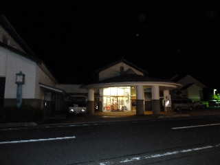

佐田のゆかり館でのんびりしてきました。
2011/08/20
出雲市佐田町の温泉「ゆかり館」で、日帰り入浴してきました。

夏休み中の土曜日の夕方なので、お客さんが多いと嫌だななんて思いながら行ったんですが、とっても空いてて快適でした。
お盆の後だったので空いてたのかもしれません。
お客さんのいない大きな浴槽一つを独り占めして、のんびりリラックスして温泉につかれました。
サウナも露店も独占できました。
今日は涼しかったので、露店風呂の風が気持ちよかったです。
温泉いいですね。他の温泉にも行きたいなって思いました。
出雲須佐温泉ゆかり館
2009/10/11
宿泊も結婚式の披露宴も出来る大きな温泉施設です。私が行ったときも、宴会や食事の人が沢山いらしゃってました。でも食事時のおかげて、温泉は空いてて快適でした。
温質はパンフレットによるとナトリウム・カルシウム－硫酸塩・塩化物泉で、皮膚炎なんかにいいみたいです。
透明でサラサラとしていて、わりとあっさりな感じでした。体が温まるのが速く、のぼせる感じになりました。
露天風呂の景色は視野角があまり広くなく、空と、山間の景色や民家が見れました。
大浴場では気づかなかったですが、露天では少しカルキっぽい臭いがしました。泉質が塩化なんとかなのでその臭いかもしれないですが、パンフレットに源泉掛け流しって書いてないのでカルキかもしれません。
よどんだ源泉掛け流しよりはカルキが入って清潔な温泉のほうが、綺麗でいいような気もしますけど。